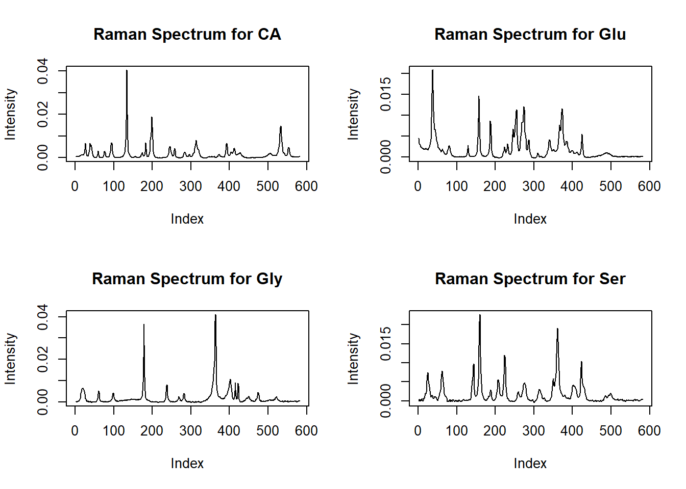
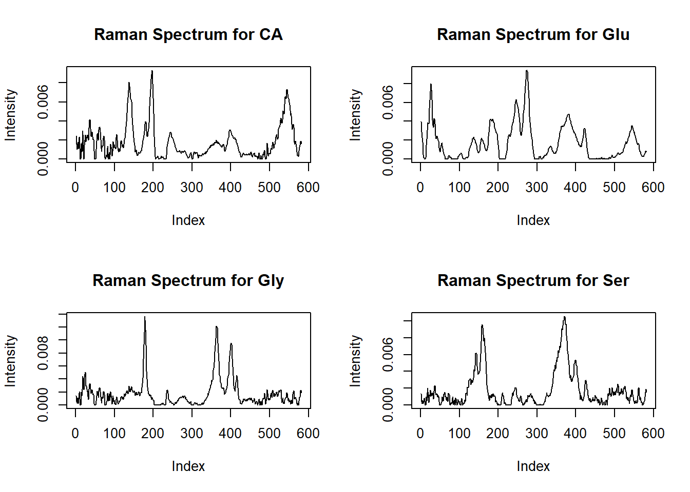
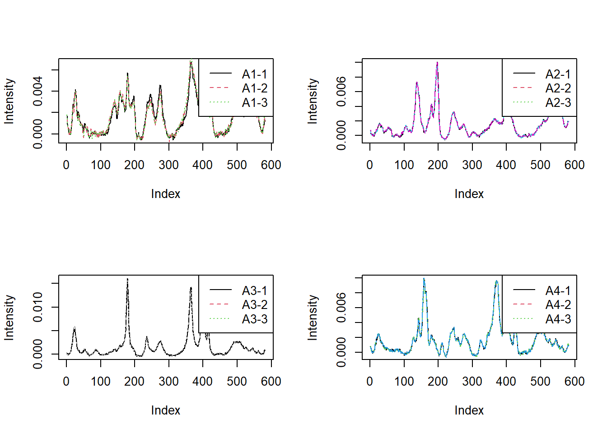
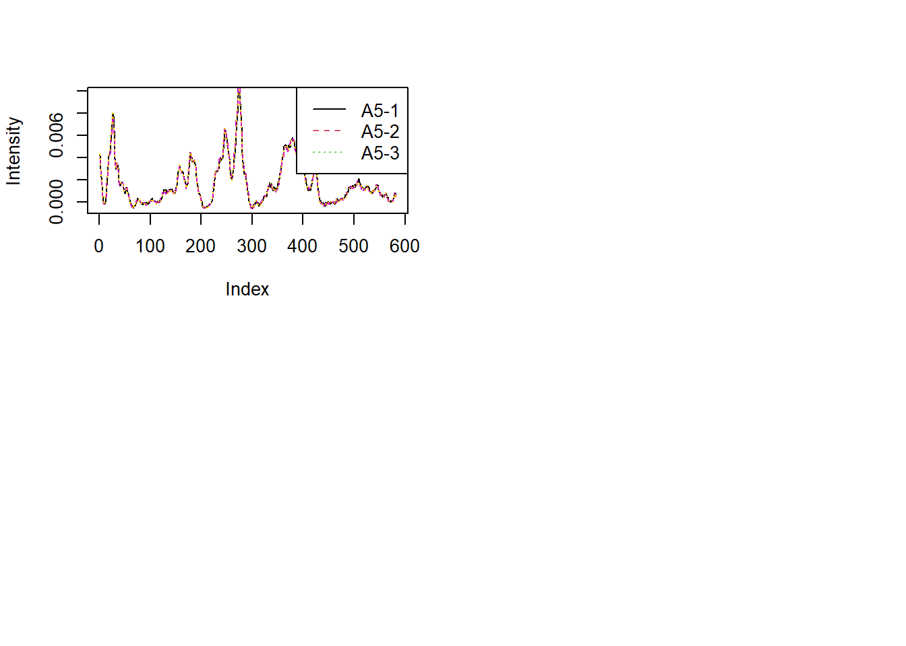
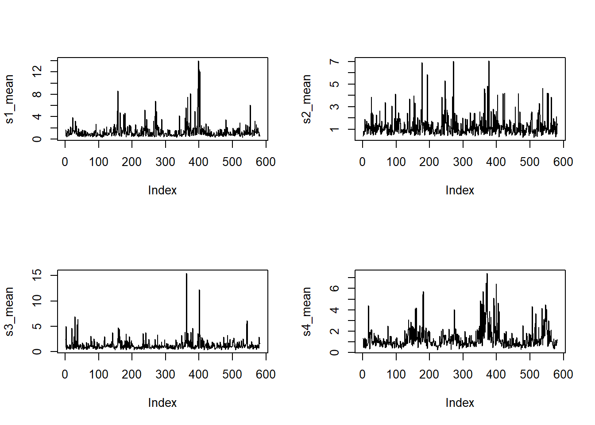
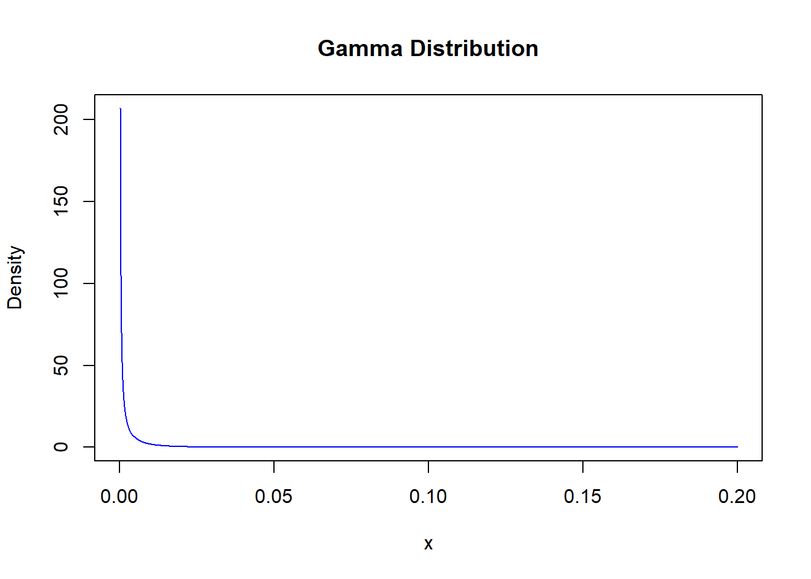
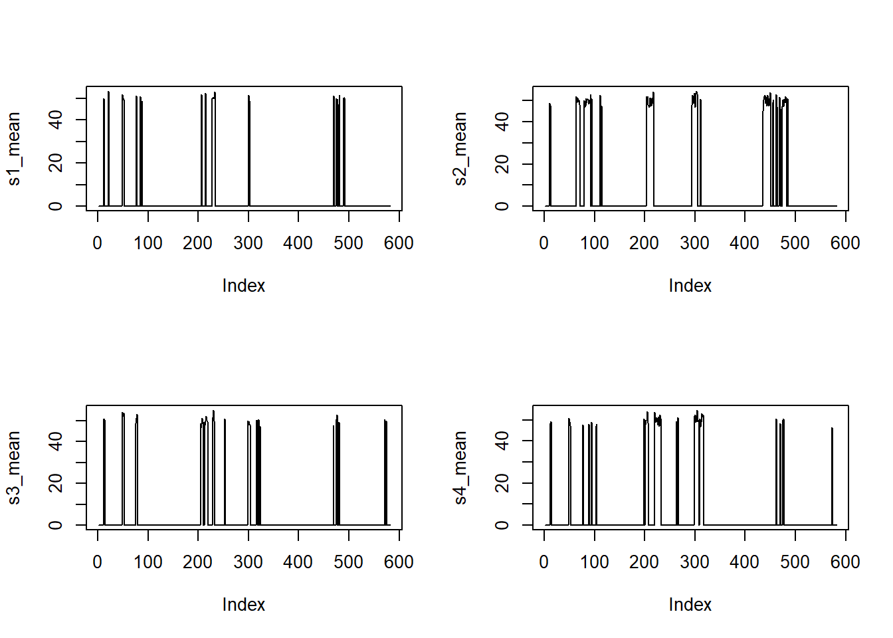
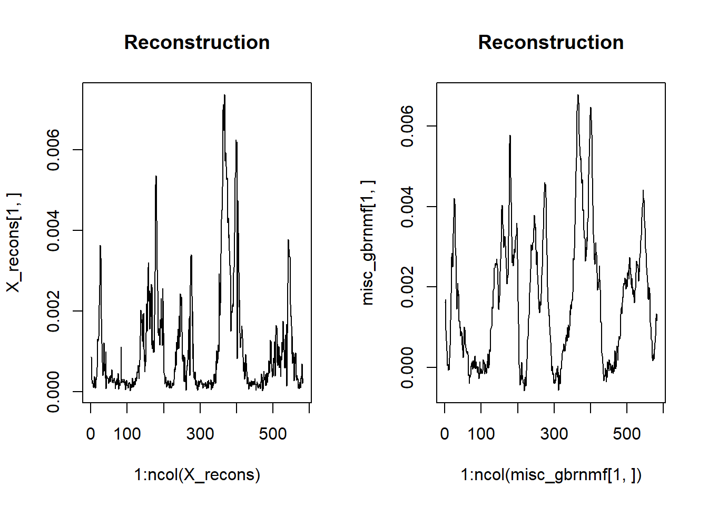
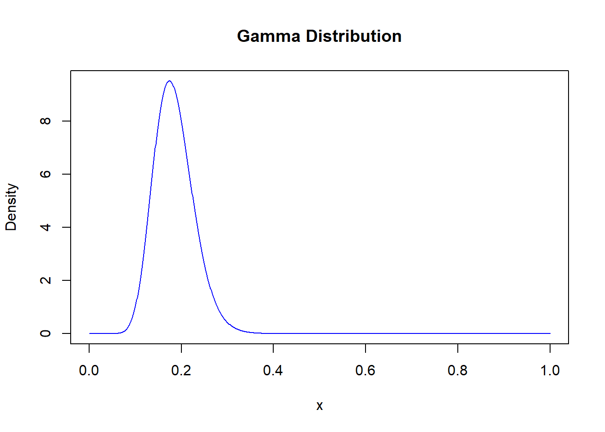
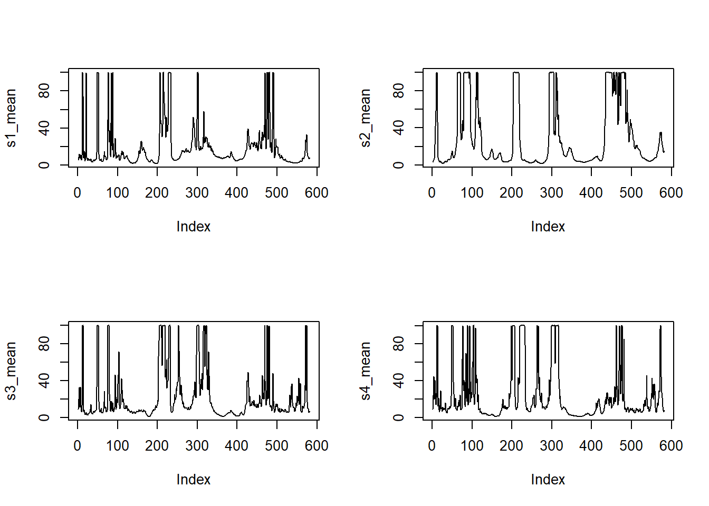

These are the Raman of the pure chemicals as solids:
pure_df <-read.csv("..\\Data\\Input Data for NMF\\Input Data for NMF\\1. Misc q=4 and q=4+ pure bases\\4BasesPure_CA-Glu-Gly-Ser.csv",header =FALSE)titles <-c("Raman Spectrum for CA", "Raman Spectrum for Glu","Raman Spectrum for Gly","Raman Spectrum for Ser")par(mfrow=c(2,2))for (i in1:4) {plot(1:length(pure_df[i,]),as.numeric(pure_df[i,]),type="l",ylab="Intensity",xlab="Index",main=titles[i]) }

If you dissolve the same chemicals in a solution you get new spectra:
pure_diss_df <-read.csv("..\\Data\\Input Data for NMF\\Input Data for NMF\\2. Misc q=4 and q=4+ solution bases\\4BasesNorm_CA-Glu-Gly-Ser.csv",header =FALSE)plot_pure_spec_dis <-function(){titles <-c("Raman Spectrum for CA", "Raman Spectrum for Glu","Raman Spectrum for Gly","Raman Spectrum for Ser")par(mfrow=c(2,2))for (i in1:4) {plot(1:length(pure_diss_df[i,]),as.numeric(pure_diss_df[i,]),type="l",ylab="Intensity",xlab="Index",main=titles[i]) }}plot_pure_spec_dis()

The following data was the data put into GBR-NMF:
misc_gbrnmf <-read.csv("..\\Data\\Input Data for NMF\\Input Data for NMF\\2. Misc q=4 and q=4+ solution bases\\nmf_data_CA_Glu_Gly_Ser.csv",header =FALSE)head(misc_gbrnmf[,1:6])
There are 3 replicates of 5 mixtures of the same 4 solutions at varying concentrations. This dataframe corresponds to A1-A5 as in the paper. Replicate means they remade the solution and took a Raman spectrum.
par(mfrow=c(2,2))titles <-sapply(1:5, function(i) paste0("A", i, "-", 1:3)) |>as.vector()for (j inc(1,4,7,10,13)) {plot(1:length(misc_gbrnmf[j,]),as.numeric(misc_gbrnmf[j,]),type="l",ylab="Intensity",xlab="Index",col=1,lty=1) for (i in (j+1):(j+2)) {lines(1:length(misc_gbrnmf[i,]),as.numeric(misc_gbrnmf[i,]),col=i,lty=i)}legend("topright", legend=titles[j:(j+2)], col=1:3, lty=1:3)}


This structure is followed for the B’s (Lipids) and the C’s (TCA). They were looking to see if they could recover the concentrations of the solutions from the mixture by telling NMF which bases signals were present. We want to see if there are Bayesian techniques to deconvolve this mixture into individual signals and see if we can tell the concentration.
We are going to do a PBSS on the Raman spectra using JAGS.
Background
The following comes from (Brie et al. 2016). Consider the following model:
\[\mathbf{X} = \mathbf{AS} + \mathbf{E}\]
\(\mathbf{X}_{m \times n}\) is the data matrix where row vectors are the spectra.
\(\mathbf{A}_{m \times p}\) is the mixing matrix with its column vectors representing the mixing coefficients of each pure component.
\(\mathbf{S}_{p \times n}\) is the spectra matrix where each row vector is one of the \(p\) pure spectra.
\(\mathbf{E}_{m \times n}\) is the additive noise matrix.
It is assumed \(\mathbf{A}\) and \(\mathbf{S}\) are independent.
Solutions are not unique therefore prior information on the pure component spectra and concentration profiles should be included.
Each noise sequence (row vector of \(\mathbf{E}\)) is assumed iid Gaussian with zero mean and constant variance within a row. The prior of \(\mathbf{E}\) is given as
The pure component spectra are considered mutually independent and identically distribution. Each pure spectrum (row of \(\mathbf{S}\)) is assumed Gamma with hyperparameters constant for each spectrum. The prior of \(\mathbf{S}\) is given as
The prior for the variance hyperparameter of \(\mathbf{E}\) is a \(\mathcal{G}(2,\epsilon)\) assigned to \(\frac{1}{\sigma^2_i}\) where \(\epsilon\) is a small number like \(10^{-1}\). The hyperparameters of both \(\mathbf{A}\) and \(\mathbf{S}\) are \(\mathcal{G}(2,\epsilon)\).
# Put samples in dataframecodaSamples[[1]] |>as.data.frame() -> AS# Extract matricesS <- AS[,-(1:12)]A <- AS[,(1:12)]
# Make function for plotting mean learned spectraplot_s <-function(S) {par(mfrow =c(2, 2)) s1 <- S[, grep("S\\[1,", names(S))]# s1 <- s1[45000:50000,] s1_mean <-apply(s1, MARGIN =2, mean)plot(s1_mean, lty =1, type ="l") s2 <- S[, grep("S\\[2,", names(S))] s2_mean <-apply(s2, MARGIN =2, mean)plot(s2_mean, lty =1, type ="l") s3 <- S[, grep("S\\[3,", names(S))] s3_mean <-apply(s3, MARGIN =2, mean)plot(s3_mean, lty =1, type ="l") s4 <- S[, grep("S\\[4,", names(S))] s4_mean <-apply(s4, MARGIN =2, mean)plot(s4_mean, lty =1, type ="l")}# Make a function to get mean mixing propssummar_A <-function(A) { a1 <- A[, grep("A\\[1,", names(A))] a1_mean <-apply(a1, MARGIN =2, mean) a2 <- A[, grep("A\\[2,", names(A))] a2_mean <-apply(a2, MARGIN =2, mean) a3 <- A[, grep("A\\[3,", names(A))] a3_mean <-apply(a3, MARGIN =2, mean)list(a1 = a1_mean,a2 = a2_mean,a3 = a3_mean)}
# Plot Spectraplot_s(S)

plot_pure_spec_dis()
Looks like bottom right plot is Gly but they are really noisey.
Here is an example of the diagnostics for one of the parameter values. Likely chain didn’t converge and posterior density is multimodal.
source("./utilities/DBDA2E-utilities.R")
*********************************************************************
Kruschke, J. K. (2015). Doing Bayesian Data Analysis, Second Edition:
A Tutorial with R, JAGS, and Stan. Academic Press / Elsevier.
*********************************************************************
ESS mean median mode hdiMass hdiLow hdiHigh compVal
theta 3.534253 1.089558 1.191146 0.1597042 0.95 0.04029776 2.349739 NA
pGtCompVal ROPElow ROPEhigh pLtROPE pInROPE pGtROPE
theta NA NA NA NA NA NA
Weird looking posterior. Lets see what the mixing proportions are:
Proportions are fairly even except of the last which is encouraging except mixtures don’t sum to one… model mispecification?
Informative Prior (Exp)
Now we can try decomposing with very informative priors on S and see if we recover equal mixing proportions in A.
X <-as.matrix(misc_gbrnmf[1:3,])m <-nrow(X)n <-ncol(X)p <-4E <-10^-3alpha_s <-matrix(0.05, nrow = p, ncol = n)beta_s <-0.05/as.matrix(pure_diss_df)beta_s[is.infinite(beta_s)] <- EdataList <-list(X = X, m = m, n = n, p = p, E = E, alpha_s = alpha_s, beta_s = beta_s)
Here is an example of the gamma prior we are trying:
# Create a sequence of x valuesx <-seq(0, 0.2, length.out =1000)# Compute the density of the Gamma distribution at these x valuesy <-dgamma(x, shape = alpha_s[2,100], rate = beta_s[2,100])# Plot the distributionplot(x, y, type ='l', main ='Gamma Distribution',xlab ='x', ylab ='Density', col ='blue')

It is essentially exponential with the expectation centered on the true pure spectrum value. First lets use JAGS with no data to investigate our prior model:
# dataList <- list(m = m, n = n, p = p, E = E, alpha_s = alpha_s, beta_s = beta_s)# # jagsModel = jags.model(# file = "PSSmodel.txt" ,# data = dataList ,# n.chains = 1 ,# n.adapt = 500# )# # update(jagsModel , n.iter = 1000)# # codaSamples = coda.samples(jagsModel ,# variable.names = c("A","S") ,# n.iter = 50000/4)# save(codaSamples, file = "./data/badPriors.RData")load("./data/badPriors.RData")
# Convert mcmc.list to a list of data framescodaSamples[[1]] |>as.data.frame() -> ASS <- AS[,-(1:12)]A <- AS[,(1:12)]
# Plot Spectraplot_s(S)

Clearly this doesn’t correspond even kind of to the spectrum we are putting in but as we’ll see this configuration oddly leads to 2 recovered spectra.
# set.seed(87425)# X <- as.matrix(misc_gbrnmf[1:3,])# m <- nrow(X)# n <- ncol(X)# p <- 4# E <- 10^-3# # alpha_s <- matrix(0.05, nrow = p, ncol = n)# beta_s <- 0.05 / as.matrix(pure_diss_df)# beta_s[is.infinite(beta_s)] <- E# # dataList <- list(X = X, m = m, n = n, p = p, E = E, alpha_s = alpha_s, beta_s = beta_s)# # jagsModel = jags.model(# file = "PSSmodel.txt" ,# data = dataList ,# n.chains = 1 ,# n.adapt = 100# )# # update(jagsModel , n.iter = 500)# # codaSamples = coda.samples(jagsModel ,# variable.names = c("A", "S") ,# n.iter = 5000)# # save(codaSamples, file = "./data/codaSamplesInformativePriorUnScaled.RData")load("./data/codaSamplesInformativePriorUnScaled.RData")
# Convert mcmc.list to a list of data framescodaSamples[[1]] |>as.data.frame() -> ASS <- AS[,-(1:12)]A <- AS[,(1:12)]
ESS mean median mode hdiMass hdiLow hdiHigh compVal
theta 3.949575 0.193832 0.1720978 0.1562126 0.95 0.1047337 0.3327659 NA
pGtCompVal ROPElow ROPEhigh pLtROPE pInROPE pGtROPE
theta NA NA NA NA NA NA
They are fairly equal except for one entry in each. They also don’t sum to one but are close.
Let’s see what the reconstruction looks like:
parse_indices <-function(name) { matches <-regmatches(name, gregexpr("\\d+", name))[[1]] indices <-as.integer(matches)return(indices)}S_format <-matrix(0, nrow =4, ncol =582)# Assign values from the dataframe to the matrixfor (col_name incolnames(S)) { indices <-parse_indices(col_name) S_format[indices[1], indices[2]] <-mean(S[,col_name])}A_format <-matrix(0, nrow =3, ncol =4)# Assign values from the dataframe to the matrixfor (col_name incolnames(A)) { indices <-parse_indices(col_name) A_format[indices[1], indices[2]] <-mean(A[,col_name])}A_format %*% S_format |>as.data.frame() -> X_reconspar(mfrow=c(1,2))plot(1:ncol(X_recons),X_recons[1,], lty =1, type ="l",main="Reconstruction")plot(1:ncol(misc_gbrnmf[1,]),misc_gbrnmf[1,], lty =1, type ="l",main="Reconstruction")

Not a horrible reconstruction, seemingly some loss of information as expected (right most part of the reconstruction is not as bumpy as the original) also there is a resolution difference now.
Informative Prior - trying to get good looking prior model
I want to move towards informative priors that actually resemble our spectra. First I’ll try scaling our data so we can get more reasonable gamma distribution hyperparameters.
Now I’ll try making it so the mode value is the true spectra value, not the expected value.
rate <-100mode <- pure_spec_scaled[1,1]shape <- mode * rate +1# Create a sequence of x valuesx <-seq(0, 1, length.out =1000)# Compute the density of the Gamma distribution at these x valuesy <-dgamma(x, shape = shape, rate = rate)# Plot the distributionplot(x, y, type ='l', main ='Gamma Distribution',xlab ='x', ylab ='Density', col ='blue')

Let’s check out the prior model in JAGS
# set.seed(87425)# m <- nrow(X_scaled)# n <- ncol(X_scaled)# p <- 4# E <- 10^-3# # alpha_s <- matrix(100, nrow = p, ncol = n)# beta_s <- pure_spec_scaled * rate + 1# # dataList <- list(m = m, n = n, p = p, E = E, alpha_s = alpha_s, beta_s = beta_s)# # jagsModel = jags.model(# file = "PSSmodel.txt" ,# data = dataList ,# n.chains = 1 ,# n.adapt = 500# )# # update(jagsModel , n.iter = 1000)# # codaSamples = coda.samples(jagsModel ,# variable.names = c("A","S") ,# n.iter = 50000/4)# save(codaSamples, file = "./data/goodKindaWidePriors.RData")load("./data/goodKindaWidePriors.RData")
# Convert mcmc.list to a list of data framescodaSamples[[1]] |>as.data.frame() -> ASS <- AS[,-(1:12)]A <- AS[,(1:12)]
# Plot Spectraplot_s(S)

TODO how can I make better prior model?
# set.seed(87425)# m <- nrow(X_scaled)# n <- ncol(X_scaled)# p <- 4# E <- 10^-3# # alpha_s <- matrix(100, nrow = p, ncol = n)# beta_s <- pure_spec_scaled * rate + 1# # beta_s[is.infinite(beta_s)] <- E# # dataList <- list(X = X_scaled, m = m, n = n, p = p, E = E, alpha_s = alpha_s, beta_s = beta_s)# # jagsModel = jags.model(# file = "PSSmodel.txt" ,# data = dataList ,# n.chains = 1 ,# n.adapt = 100# )# # update(jagsModel , n.iter = 500)# # codaSamples = coda.samples(jagsModel ,# variable.names = c("A", "S") ,# n.iter = 5000)# # save(codaSamples, file = "./data/codaSamplesInformativePriorScaled.RData")load("./data/codaSamplesInformativePriorScaled.RData")
# Convert mcmc.list to a list of data framescodaSamples[[1]] |>as.data.frame() -> ASS <- AS[,-(1:12)]A <- AS[,(1:12)]
ESS mean median mode hdiMass hdiLow
theta 885.1144 0.001051274 0.001042485 0.001085871 0.95 0.0002367415
hdiHigh compVal pGtCompVal ROPElow ROPEhigh pLtROPE pInROPE pGtROPE
theta 0.00191964 NA NA NA NA NA NA NA
Things to also try: all mixed solutions, see if it find spectra, mixing coefficients will probably be messed up Informative priors on just A and not S
STAN
Is there a difference if we use STAN?
References
Brie, David, Saı̈d Moussaoui, Sebastian Miron, Cédric Carteret, and Manuel Dossot. 2016. “Bayesian Positive Source Separation for Spectral Mixture Analysis.” In Data Handling in Science and Technology, 30:279–309. Elsevier.